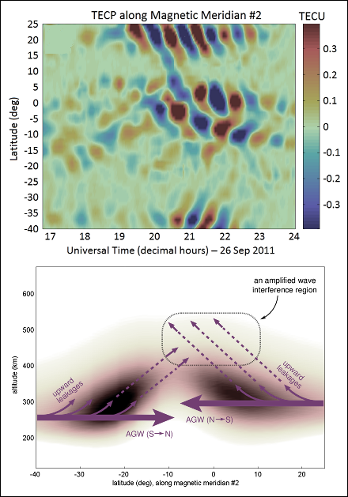
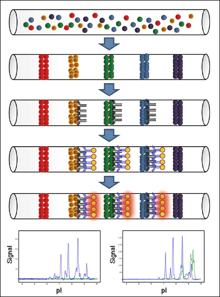
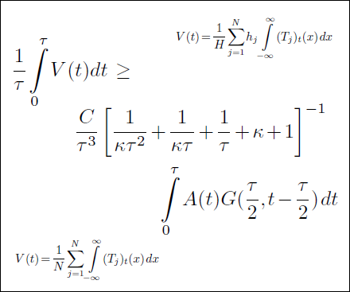
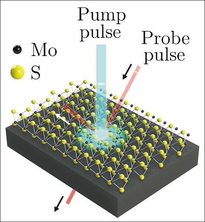
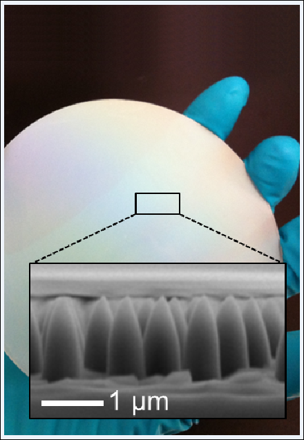
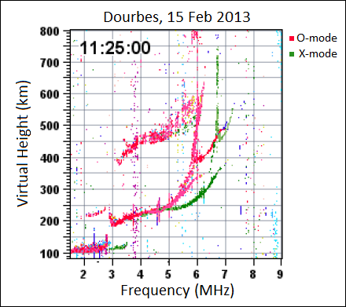
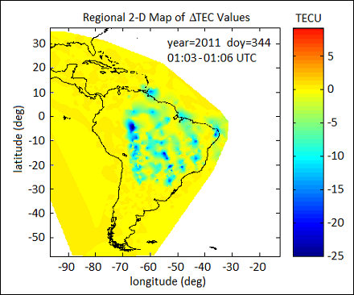
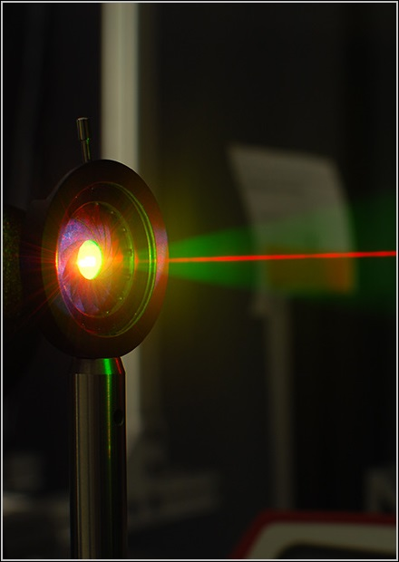

|  |
Interhemispheric propagation and interactions of auroral traveling ionospheric disturbances near the equator
Rezy Pradipta, Cesar E. Valladares, Brett A. Carter, and Patricia H. Doherty
We present the results of our GPS total electron content and ionosonde observations of large-scale traveling ionospheric disturbances (LSTIDs) during the 26 September 2011 geomagnetic storm. We analyzed the propagation characteristics of these LSTIDs from the auroral zones all the way to the equatorial region and studied how the auroral LSTIDs from opposite hemispheres interact/interfere near the geomagnetic equator. We found an overall propagation speed of ~700 m/s for these LSTIDs and that the resultant amplitude of the LSTID interference pattern actually far exceeded the sum of individual amplitudes of the incoming LSTIDs from the immediate vicinity of the interference zone. We suspect that this peculiar intensification of auroral LSTIDs around the geomagnetic equator is facilitated by the significantly higher ceiling/canopy of the ionospheric plasma layer there. Normally, acoustic-gravity waves (AGWs) that leak upward (and thus increase in amplitude) would find a negligible level of plasma density at the topside ionosphere. However, the tip of the equatorial fountain at the geomagnetic equator constitutes a significant amount of plasma at a topside-equivalent altitude. The combination of increased AGW amplitudes and a higher plasma density at such altitude would therefore result in higher-amplitude LSTIDs in this particular region, as demonstrated in our observations and analysis.
J. Geophys. Res. Space Physics, 121, 2462-2474 (2016) |
|  |
A high-throughput capillary isoelectric focusing immunoassay for fingerprinting protein sialylation
Lam Raga A. Markely, Lila Cheung, Young Jun Choi, Thomas Ryll, Scott Estes, Shashi Prajapati, Iva Turyan, Ruth Frenkel, Zoran Sosic, James Lambropoulos, Lia Tescione, Thomas Ryll, and Melissa Berman
The serum half-life, biological activity, and solubility of many recombinant glycoproteins depend on their sialylation. Monitoring glycoprotein sialylation during cell culture manufacturing is, therefore, critical to ensure product efficacy and safety. Here a high-throughput method for semi-quantitative fingerprinting of glycoprotein sialylation using capillary isoelectric focusing immunoassay on NanoPro (Protein Simple) platform was developed. The method was specific, sensitive, precise, and robust. It could analyze 2 µL of crude cell culture samples without protein purification, and could automatically analyze from 8 samples in 4 h to 96 samples in 14 h without analyst supervision. Furthermore, its capability to detect various changes in sialylation fingerprints during cell culture manufacturing process was indispensable to ensure process robustness and consistency. Moreover, the changes in the sialylation fingerprints analyzed by this method showed strong correlations with intact mass analysis using liquid chromatography and mass spectrometry.
Biotechnol. Progress, 32: 235–241 (2016) |
|  |
Enhancement of combustion by drift in a coupled reaction-diffusion model
Lam Raga A. Markely, David Andrzejewski, Erick Butzlaff, and Alexander Kiselev
We study analytically and numerically a model describing front propagation of a KPP reaction in a fluid flow. The model consists of coupled one-dimensional reaction-diffusion equations with different drift coefficients. The main rigorous results give lower bounds for the speed of propagation that are linear in the drift coefficient, which agrees very well with the numerical observations. In addition, we find the optimal constant in a functional inequality of independent interest used in the proof.
Commun. Math. Sci., 4(1), 213-225 (2006) |
|  |
Intervalley biexcitons and many-body effects in monolayer MoS2
Edbert J. Sie, Alex J. Frenzel, Yi-Hsien Lee, Jing Kong, and Nuh Gedik
The formation of biexcitons is a rare and fascinating phenomenon induced by Coulomb interactions in semiconductors. They are usually understood as hydrogen molecules in solids, with merely modified energy structure from conventional molecules. Meanwhile, recent development of atomically-thin semiconductors, known as monolayer transition metal dichalcogenides (TMDs), provides a platform to realize exotic biexciton species with characteristics that are absent in molecules. Excitons in these materials can acquire a new degree of freedom, the valley index, in addition to their usual atom-like orbital and spin indices. This allows the formation of intervalley biexcitons, a new type where the two constituent excitons have different valley indices. Here, we report the observation of intervalley biexcitons in monolayer TMD MoS2 and measured their properties, using two synchronized femtosecond laser pulses.
Physical Review B, 92, 125417 (2015) |
|  |
Textured conducting glass by nanosphere lithography for increased light absorption in thin-film solar cells
Jonathan P. Mailoa, Yun Seog Lee, Tonio Buonassisi, and Inna Kozinsky
Nanoscale surface texturing in thin-film solar cells has been shown to enhance device efficiency by increasing light absorption through reduced reflectance and increased light scattering across a broad range of wavelengths and angles. However, light trapping in the industrial thin-film cells is still sub-optimal and creating optimized nanoscale texture over a large area remains challenging. In this article, we present a well-controlled low-cost process to fabricate a periodic nanocone texture optimized for maximum light absorption in thin-film microcrystalline silicon solar cells. The texture is fabricated using nanosphere lithography with the period controlled by the nanosphere diameter and the texture shape and aspect ratio controlled by the reactive ion etching conditions. Finite-difference time-domain optical simulations are used to optimize the texture in the state-of-the-art microcrystalline cells, and optical absorption measurements show that the same cells fabricated on the optimized nanocone-textured substrates exhibit a relative short-circuit current increase of close to 30% compared to a reference state-of-the-art cell with a randomly textured zinc oxide layer. This nanocone texturing technique is compatible with standard thin-film cell fabrication processes and can also be used for other thin-film cells (CIGS, CdTe, CZTS, etc) to maximize light absorption and minimize layer thickness enabling more efficient carrier collection and lower overall cost.
Journal of Physics D: Applied Physics, 47 (2014) |
|  |
Ionosonde observations of ionospheric disturbances due to the 15 February 2013 Chelyabinsk meteor explosion
Rezy Pradipta, Cesar E. Valladares, and Patricia H. Doherty
We report the results of our investigations on the potential ionospheric effects caused by the 15 February 2013 Chelyabinsk meteor explosion. We used the data from a number of digisonde stations located in Europe and Russia to detect the traveling ionospheric disturbances (TIDs) likely to have been caused by the meteor explosion. We found that certain characteristic signatures of the TIDs can be identified in individual ionogram records, mostly in the form of Y-forking/splitting of the ionogram traces. Based on the arrival times of the disturbances, we have inferred the overall propagation speed of the TIDs from Chelyabinsk to be 171 + 14 m/s.
J. Geophys. Res. Space Physics, 120, 9988-9997 (2015) |
|  |
An effective TEC data detrending method for the study of equatorial plasma bubbles and traveling ionospheric disturbances
Rezy Pradipta, Cesar E. Valladares, and Patricia H. Doherty
Using a mechanical analogy of rolling a cylindrical barrel on a rough uneven surface, we developed a special method for detrending the GPS-derived total electron content (TEC) data. This method is specifically designed to recognize the presence of depletions in the TEC time series data and handle them differently from wavelike features. We also demonstrate a potential application of this technique to map the detailed geographic profile of TEC depletions over the equatorial region, using the South American sector as an example.
J. Geophys. Res. Space Physics, 120, 11048-11055 (2015) |
|
Valley-selective optical Stark effect in monolayer WS2
Edbert J. Sie, James W. McIver, Yi-Hsien Lee, Liang Fu, Jing Kong, and Nuh Gedik
Breaking space–time symmetries in two-dimensional crystals can markedly influence their macroscopic electronic properties. Monolayer transition metal dichalcogenides (TMDs) are
prime examples where the intrinsically broken crystal inversion symmetry permits the generation of valley-selective electron populations, even though the two valleys are energetically
degenerate, locked by time-reversal symmetry. Lifting the valley degeneracy in these materials is of great interest because it would allow for valley-specific band engineering and
offer additional control in valleytronic applications. Although applying a magnetic field should, in principle, accomplish this task, experiments so far have not shown valley-selective
energy level shifts in fields accessible in the laboratory. Here, we show the first direct evidence of lifted valley degeneracy in the monolayer TMD WS2. By applying intense circularly polarized light, which breaks time-reversal symmetry, we demonstrate that the exciton level in each valley can be selectively tuned by as much as 18 meV through the optical Stark effect. These results offer a new way to control the valley degree of freedom, and may provide a means to realize new Floquet topological phases in two-dimensional TMDs.
Nature Materials, 14, 290-294 (2015) |
|  |
Room-temperature sub-band gap optoelectronic response of hyperdoped silicon
Jonathan P. Mailoa, Austin J. Akey, Christie B. Simmons, David Hutchinson, Jay Mathews, Joseph T. Sullivan, Daniel Recht, Mark T. Winkler, James S. Williams, Jeffrey M. Warrender, Peter D. Persans, Michael J. Aziz, and Tonio Buonassisi
Room-temperature infrared sub-band gap photoresponse in silicon is of interest for telecommunications, imaging and solid-state energy conversion. Attempts to induce infrared
response in silicon largely centred on combining the modification of its electronic structure via controlled defect formation (for example, vacancies and dislocations) with waveguide
coupling, or integration with foreign materials. Impurity-mediated sub-band gap photoresponse in silicon is an alternative to these methods but it has only been studied at low
temperature. Here we demonstrate impurity-mediated room-temperature sub-band gap photoresponse in single-crystal silicon-based planar photodiodes. A rapid and repeatable laser-based hyperdoping method incorporates supersaturated gold dopant concentrations on the order of 1020 cm-3 into a single-crystal surface layer ~150 nm thin. We demonstrate room-temperature silicon spectral response extending to wavelengths as long as 2,200 nm, with response increasing monotonically with supersaturated gold dopant concentration. This hyperdoping approach offers a possible path to tunable, broadband infrared imaging using silicon at room temperature.
Nature Communications, 5:3011 (2014) |
|
A 2-terminal perovskite/silicon multijunction solar cell enabled by a silicon tunnel junction
Jonathan P. Mailoa, Colin D. Bailie, Eric C. Johlin, Eric T. Hoke, Austin J. Akey, William H. Nguyen, Michael D. McGehee, and Tonio Buonassisi
With the advent of efficient high-bandgap metal-halide perovskite photovoltaics, an opportunity exists to make perovskite/silicon tandem solar cells. We fabricate a monolithic tandem by developing a silicon-based interband tunnel junction that facilitates majority-carrier charge recombination between the perovskite and silicon sub-cells. We demonstrate a 1 cm2 2-terminal monolithic perovskite/silicon multijunction solar cell with a VOC as high as 1.65 V. We achieve a stable 13.7% power conversion efficiency with the perovskite as the current-limiting sub-cell, and identify key challenges for this device architecture to reach efficiencies over 25%.
Applied Physics Letters, 106, 121105 (2015) |
|
Transcriptional divergence and conservation of human and mouse erythropoiesis
Novalia Pishesha, Prathapan Thiru, Jiahai Shi, Jennifer C. Eng, Vijay G. Sankaran, and Harvey F. Lodish
Mouse models have been used extensively for decades and have been instrumental in improving our understanding of mammalian erythropoiesis. Nonetheless, there are several examples of variation between human and mouse erythropoiesis. We performed a comparative global gene expression study using data from morphologically identical stage-matched sorted populations of human and mouse erythroid precursors from early to late erythroblasts. Induction and repression of major transcriptional regulators of erythropoiesis, as well as major erythroid-important proteins, are largely conserved between the species. In contrast, at a global level we identified a significant extent of divergence between the species, both at comparable stages and in the transitions between stages, especially for the 500 most highly expressed genes during development. This suggests that the response of multiple developmentally regulated genes to key erythroid transcriptional regulators represents an important modification that has occurred in the course of erythroid evolution. In developing a systematic framework to understand and study conservation and divergence between human and mouse erythropoiesis, we show how mouse models can fail to mimic specific human diseases and provide predictions for translating findings from mouse models to potential therapies for human disease.
PNAS, vol.111, No.11, 4103-4108 (2014) |
|
Generation of artificial acoustic-gravity waves and traveling ionospheric disturbances in HF heating experiments
Rezy Pradipta, Min-Chang Lee, Joel A. Cohen, and Brenton J. Watkins
We report the results of our ionospheric HF heating experiments to generate artificial acoustic-gravity waves (AGW) and traveling ionospheric disturbances (TID), which were conducted at the High-frequency Active Auroral Research Program facility in Gakona, Alaska. Based on the data from UHF radar, GPS total electron content, and ionosonde measurements, we found that artificial AGW/TID can be generated in ionospheric modification experiments by sinusoidally modulating the power envelope of the transmitted O-mode HF heater waves. In this case, the modulation frequency needs to be set below the characteristic Brunt-Vaisala frequency at the relevant altitudes. We avoided potential contamination from naturally-occurring AGW/TID of auroral origin by conducting the experiments during geomagnetically quiet time period. We determine that these artificial AGW/TID propagate away from the edge of the heated region with a horizontal speed of approximately 160 m/s.
Earth Moon and Planets, vol.116, Issue 1 (2015) - Topical Issue on Ionospheric Modification |
|
GPS observation of continent-size traveling TEC pulsations at the start of geomagnetic storms
Rezy Pradipta, Cesar E. Valladares, and Patricia H. Doherty
We report our experimental observation of continent-size traveling plasma disturbances using GPS measurements of total electron content (TEC) over the North American sector. These plasma disturbances occurred at the beginning of geomagnetic storms, immediately after the shock arrived, and prior to the appearance of large-scale traveling ionospheric disturbances (LSTIDs) from the auroral region. Specifically, these supersize TEC perturbations were observed when the interplanetary magnetic field Bz was oscillating between northward and southward directions. They were found to propagate zonally with a propagation speed of 2-3 km/s. We interpret these TEC pulsations as ion drift waves in the magnetosphere/plasmasphere that propagate azimuthally inside the GPS orbit.
J. Geophys. Res. Space Physics, 119, 6913-6924 (2014) |
") |
Surrogate models and mixtures of experts in aerodynamic performance prediction for aircraft mission analysis
Rhea P. Liem, Charles A. Mader, and Joaquim R.R.A. Martins
The accurate evaluation of aircraft fuel burn over a complete mission is computationally expensive and may require millions of aerodynamic performance evaluations. Thus, it is advantageous to use surrogate models as approximations of high-fidelity aerodynamic or aerostructural models. Conventional surrogate models, such as the radial basis function and kriging, cannot model these functions accurately, especially in the transonic regime. To address this issue, we explore several ways to improve the accuracy of surrogate models. First, we employ an adaptive sampling algorithm to complement a traditional space-filling algorithm. Second, we improve the kriging surrogate performance by including gradient information in the interpolation (a form of gradient-enhanced kriging -- GEK) and by introducing a known trend in the global model component (kriging with a trend). Lastly, we propose a mixture of experts (ME) approach, which is based on the divide-and-conquer principle. We validate our surrogate models using aerodynamic data for conventional and unconventional aircraft configurations, and we assess their performance in predicting the mission ranges by analyzing ten mission profiles. Our results show that the proposed ME approach is superior to the traditional models. Using a mixture of GEK models to approximate the drag coefficients gives approximation errors of less than 5% with fewer than 150 samples, whereas the adaptive sampling fails to converge when training a global model. However, when we have a simple function profile, such as the lift and moment coefficients, using a conventional surrogate model is more efficient than an ME model, because of the added computational complexity in the latter. The range estimation errors associated with the ME models are less than 2% for all the benchmark mission profiles considered, whereas some traditional models yield errors as high as 20–80%. We thus conclude that the ME technique is both necessary and sufficient for modeling the aerodynamic coefficients for surrogate-based mission analysis.
Aerospace Science and Technology, 43, 126-151 (2015) |
|
Multimission aircraft fuel-burn minimization via multipoint aerostructural optimization
Rhea P. Liem, Gaetan K.W. Kenway, and Joaquim R.R.A. Martins
Aerodynamic shape and aerostructural design optimizations that maximize the performance at a single flight condition may result in designs with unacceptable off-design performance. While considering multiple flight conditions in the optimization improves the robustness of the designs, there is a need to develop a way of choosing the flight conditions and their relative emphases such that multipoint optimizations reflect the true objective function. In addition, there is a need to consider uncertain missions and flight conditions. To address this, a new strategy to formulate multipoint design optimization problems is developed that can maximize the aircraft performance over a large number of different missions. This new strategy is applied to the high-fidelity aerostructural optimization of a long-range twin-aisle aircraft with the objective of minimizing the fuel burn over all the missions it performs in one year. This is accomplished by determining 25 flight conditions and their respective emphases on drag and structural weight that emulate the fuel-burn minimization for over 100,000 missions. The design optimization is based on the computational fluid dynamics of a full aircraft configuration coupled to a detailed finite element model of the wing structure, enabling the simultaneous optimization of wing aerodynamic shape and structural sizing leading to optimal static aeroelastic tailoring. A coupled adjoint method in conjunction with a gradient-based optimizer enable optimization with respect to 311 design variables subject to 152 constraints. Given the high computational cost of the aerostructural analysis, kriging models are used to evaluate the multiple missions. The results show that the multipoint optimized design reduced the total fuel burn by 6.6%, while the single-point optimization reduced it by only 1.7%. This capability to analyze large numbers of flight conditions and missions and to reduce the multimission problem to a multipoint problem could be used with a few modifications to minimize the expected value of any objective function given the probability density functions of the flight conditions.
AIAA Journal, vol.53, No.1, 104-122 (2015) |
|
A high-throughput method for quantification of glycoprotein sialylation
Lam Raga A. Markely, Boon Tee Ong, Kong Meng Hoi, Gavin Teo, Michelle Y. Lu, and Daniel I.C. Wang
Sialic acid can improve qualities of therapeutic glycoproteins such as circulatory half-life, biological activity, and solubility. In production of therapeutic glycoproteins, a high-throughput method is required for process monitoring and optimization to ensure consistent and optimal sialic acid content. Current methods for quantifying sialic acid, however, require chromatographic separation that is time-consuming and cannot rapidly analyze many samples in parallel. Here we present a novel high-throughput method for quantifying glycoprotein sialylation. Using chemical reduction, enzymatic release of sialic acid, and chemical derivatization of the sialic acid, the method can accurately, rapidly (15 min), and specifically analyze many samples in parallel. It requires only 45 µl of sample and has a quantitation limit of 2 µM sialic acid. It has also been validated for monitoring sialylation of recombinant interferon gamma (IFN-γ) produced in Chinese hamster ovary (CHO) cell culture. This method is useful for various applications in upstream and downstream bioprocesses.
Analytical Biochemistry, 407(1), 128–133 (2010) |
|
High-throughput analysis of intraclonal variability of glycoprotein sialylation
Lam Raga A. Markely and Daniel I. C. Wang
Development of recombinant Chinese Hamster Ovary (CHO) cells producing therapeutic proteins requires analyzing the quality, such as sialic acid content, of proteins produced by many cell clones. In order to perform these analyses, high-throughput methods are required. Conventional methods for quantifying sialic acid, however, require protein purification, which is time consuming and cannot be used for high-throughput analysis. Here we used a high-throughput method (HTM) that we recently developed to analyze the intraclonal variability of 24 CHO cell subclones. The sialic acid content varied significantly from 1 to 70 mg sialic acid/g protein, and the concentration of total proteins secreted by the cells varied from 41 to 214 mg/L. In addition, the sialic acid content was negatively correlated with total protein concentration. This trend agrees with previous theoretical and experimental studies. Overall, the HTM can finish these analyses in 15 minutes, while conventional methods used in previous studies will require at least 24 days. Thus, the HTM can significantly accelerate the analyses of clonal and intraclonal variability in cell line development
Biotechnology Progress, 28:591-594 (2012) |
|
High-throughput ion exchange purification of positively charged recombinant protein in the presence of negatively charged dextran sulfate
Lam Raga A. Markely, Lutfiye Kurt, Janet Lau, Sarthak Mane, Bing Guan, Thomas Ryll, Scott Estes, Shashi Prajapati, Meisam Bakhshayeshi, and John Pieracci
Product quality analyses are critical for developing cell line and bioprocess producing therapeutic proteins with desired critical product quality attributes. To facilitate these analyses, a high-throughput small-scale protein purification (SSP) is required to quickly purify many samples in parallel. Here we develop an SSP using ion exchange resins to purify a positively charged recombinant growth factor P1 in the presence of negatively charged dextran sulfate supplemented to improve the cell culture performance. The major challenge in this work is that the strong ionic interaction between P1 and dextran sulfate disrupts interaction between P1 and chromatography resins. To solve this problem, we develop a two-step SSP using Q Sepharose Fast Flow (QFF) and SP Sepharose XL (SPXL) resins to purify P1. The overall yield of this two-step SSP is 78%. Moreover, the SSP does not affect the critical product quality attributes. The SSP was critical for developing the cell line and process producing P1.
Biotechnology Progress, 30:516-520 (2014) |
|
Improvement in accuracy and specificity of high-throughput sialic acid assay
Lam Raga A. Markely, Kanvasri N. Jonnalagadda, Martin Sinacore, Thomas Rylla, and Shashi Prajapati
The efficacy of many therapeutic proteins is influenced by their sialic acid content. Optimizing and consistently controlling the qualitative attributes of proteins produced in bioprocesses would benefit significantly from a high-throughput method (HTM) for measuring the sialic acid content. Previously, we developed an HTM that could rapidly analyze many crude culture samples in parallel. Here, we used high-throughput protein purification and denaturation to improve the accuracy and specificity of the HTM. With these modifications, the current HTM can accurately, precisely, rapidly (70 min), and specifically analyze 80 crude culture samples in parallel. It requires only 30 µL crude sample, and has a quantitation limit of 1 µM sialic acid. Its accuracy has been tested on five different types of glycoproteins. Moreover, we found that sample protein denaturation is crucial to ensure complete cleavage of sialic acid by sialidase. The current HTM can be used for many applications in cell line and bioprocess development.
Analytical Methods, 4, 3565-3569 (2012) |